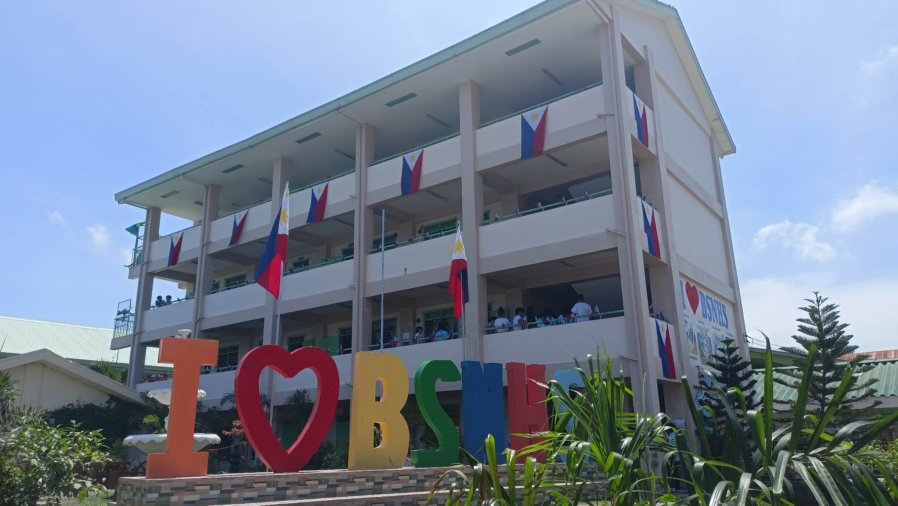

We extend a warm and enthusiastic greeting as you step into our vibrant classroom. Here, knowledge meets creativity, and curiosity takes flight. We are delighted to have you join our educational journey, where possibilities are limitless and discoveries await. As you enter this space, you are embraced by a community of learners, where every voice is valued and every idea is celebrated. Together, we will embark on a captivating adventure, exploring the wonders of science, technology, and engineering. From unraveling the mysteries of the universe to designing innovative solutions, we will ignite your passion for learning and empower you to become a trailblazer in the STE fields.
Our classroom is not  just a room filled with desks and chairs; it is a haven of growth and collaboration. Here, you will find inspiration in the company of like-minded individuals, forge lifelong friendships, and nurture your innate talents. We believe in the power of teamwork, encouraging each other to reach new heights and supporting one another in our academic endeavors. Our dedicated and experienced educators stand ready to guide and mentor you on your educational journey. They are here to ignite your curiosity, challenge your thinking, and provide you with the tools to excel. Embrace their wisdom, ask questions fearlessly, and embrace the joy of learning in this stimulating environment.
Remember, this classroom is your canvas. Allow your imagination to run wild, express yourself boldly, and push the boundaries of what you thought possible. Seize every opportunity that comes your way, whether it's conducting hands-on experiments, participating in thrilling projects, or engaging in lively discussions. Your potential knows no limits. So, welcome to 7 Grace STE! Embrace this exhilarating adventure, immerse yourself in knowledge, and let your brilliance shine. Together, let us embark on a journey that will shape not only your future but also the world around us.